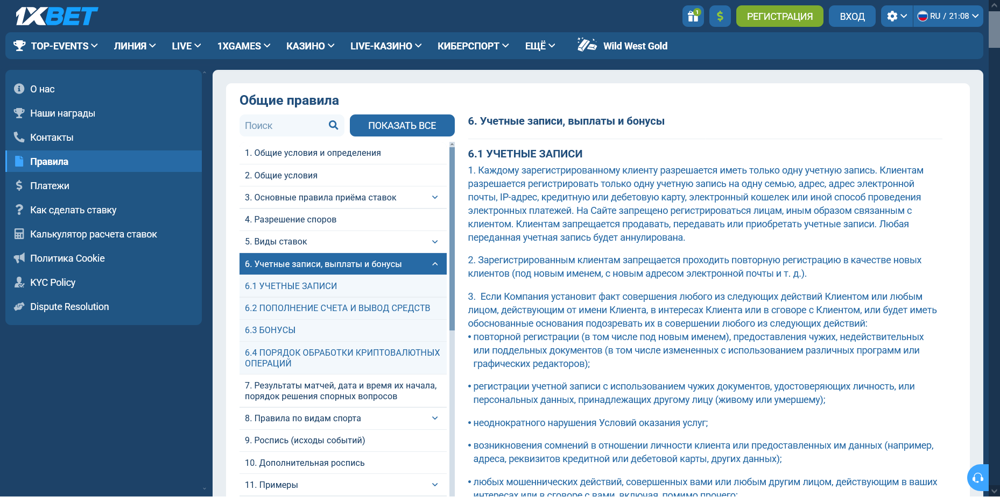

Что делать, если заявки на вывод из 1xBet отклоняют или задерживают
Когда 1xBet не выводит деньги, сначала определите, на каком из 4 этапов остановилась операция: заявку нельзя создать, её отклонили, она ожидает обработки или одобрена, но деньги не поступили. По правилам на указанном пользователем зеркале, проверенным 3 октября 2026 года, обработка заявки занимает до 7 рабочих дней в зависимости от способа оплаты. Сохраните идентификатор, время, сумму и текст статуса.
Четыре статуса вывода средств
Выводы средств из 1xBet «не проходят» по разным причинам, и у каждого из 4 состояний свой набор проверок. Откройте историю заявок и найдите последнее состояние. Заявки нет — начинайте с доступного баланса и ограничений счёта. Заявка есть — не создавайте новую до выяснения статуса первой.

| Состояние | Что проверить сейчас | Что сохранить |
|---|---|---|
| 1. Кнопка недоступна | Доступный баланс, условия акции и запрос документов (их проверка — до 72 часов). | Экран баланса и сообщение интерфейса. |
| 2. Заявка отклонена | Дословную причину и применимый пункт правил. | ID, время, сумма, текст отказа. |
| 3. Заявка ожидает | Дата подачи, срок по методу (в правилах — до 7 рабочих дней) и обновления статуса. | Хронологию изменений. |
| 4. Одобрена, поступления нет | Реквизиты, подтверждение отправки и статус у платёжного сервиса. | Номер операции и подтверждение одобрения. |
Почему 1xBet не выводит деньги: причины из правил
Отказ в выводе средств 1xBet правила связывают прежде всего с пунктом 6.2 «Пополнение счёта и вывод средств». Таблица пересказывает его по снимку от 3 октября 2026 года; к конкретной заявке применима только причина, названная в ответе оператора.
| Условие | Что сказано в правилах |
|---|---|
| Реквизиты | Только по реквизитам пополнения; при нескольких способах — пропорционально |
| Оборот | Ставки на сумму пополнений с коэффициентом не ниже 1.1 |
| Ставки без риска | Противоположные исходы в рулетке, баккаре, крэпсе и костях не учитываются |
| Ввод без ставок | Деньги возвращаются на баланс |
| Владелец | Платёжные инструменты — на имя клиента |
| Документы | Удостоверение с фото и документ о способе оплаты, срок — 1 месяц |
Выплата 1xBet по таблице проверяется в 3 точках: совпадает ли метод вывода с методом депозита, сыграна ли сумма пополнений и чья карта или кошелёк указаны.
Выводы на «другую» карту эти правила не допускают: деньги уходят по реквизитам пополнения. Пример на условных числах: депозиты 10 000 у. е. картой и 5 000 у. е. кошельком дают долю 2:1, поэтому вывод 9 000 у. е. делится как 6 000 на карту и 3 000 на кошелёк. Ставка на 2 000 у. е. с коэффициентом 1.05 в оборот не войдёт: порог в правилах — 1.1.
Выводы 1xBet могут задержаться и из-за проверки платежей: по пункту 6.2 у некоторых платёжных систем она длится до 180 дней, а учётная запись на это время может быть заблокирована без финансовых операций. Незавершённые условия акции — отдельный сценарий: выясните состояние бонусного результата до новой заявки.
Если заявку отклонили
Отклонённую выплату 1xBet фиксируйте сразу: сохраните дословное сообщение и номер операции. Сверьте доступный остаток, реквизиты пополнения, оборот с коэффициентом не ниже 1.1 и индивидуальные запросы оператора. Причина не указана — попросите письменное объяснение со ссылкой на применимый пункт правил.
«Операция № [ID] от [дата и время] на [сумма] отклонена со статусом [текст]. Прошу указать конкретную причину, применённый пункт правил и действие, необходимое для повторной подачи».
Возврат денег на баланс без отказа — тоже сценарий из правил 1xBet: служба безопасности не рекомендует переводить средства между платёжными системами и забирать деньги без ставок, а в таких случаях деньги возвращаются на счёт. Повторную операцию начинайте после выполнения условия. Пример на условных числах: после пополнения на 4 000 у. е. сыграны ставки на 2 000 у. е. — это 50% депозита, и по правилу оборота такую заявку могут отклонить.
Если заявка ожидает обработки
Сроки 1xBet в правилах зеркала, открытых 3 октября 2026 года, разделены на обработку оператором и зачисление платёжной системой. Для аккаунта из Москвы эти значения не подтверждены, поэтому сравнивайте их со сроком из своего интерфейса.
| Этап | Срок в правилах | Пункт |
|---|---|---|
| Приём запросов | Круглосуточно, 24/7 | 6.2 |
| Обработка запроса | До 7 рабочих дней в зависимости от способа оплаты | 6.2 |
| Зачисление | Определяет оператор платёжной системы | 6.2 |
| Проверка документов | До 72 часов с момента получения | 6.1 |
| Документы по запросу | Не позднее 1 месяца | 6.2 |
| Проверка платежей | До 180 дней у некоторых систем | 6.2 |
Пример отсчёта на условной дате: запрос в 1xBet создан в понедельник — 7 рабочих дней без выходных истекают в среду следующей недели. Указанный срок прошёл — обновите обращение по тому же номеру и сохраните последовательность статусов.
Если вывод одобрен, но деньги не пришли
По одобренной операции в 1xBet попросите подтверждение отправки и идентификатор перевода. Проверьте реквизиты и статус у платёжного сервиса через его проверенный канал: сроки зачисления, по пункту 6.2, определяет оператор платёжной системы. Одобрение внутри аккаунта и фактическое поступление — разные события.
Сумма перевода из 1xBet может отличаться от ожидаемой из-за конвертации: курс в платёжной операции, по правилам, может расходиться с курсом на сайте, а итоговую сумму списания и курс показывает сам запрос. Пример: при расхождении курсов на 2% перевод 10 000 у. е. изменится на 200 у. е. Выводы в BTC через криптовалютную платёжную систему облагаются комиссией. Полные реквизиты и документы в комментариях не публикуйте — для обращения достаточно замаскированных данных.
Карточка обращения по выводу
Журнал по каждой операции в 1xBet отделяет факты от предположений и позволяет передать одинаковые данные оператору и платёжному сервису. Заполняйте 5 полей ниже в момент каждого изменения статуса и храните записи не меньше 180 дней — столько, по правилам, может длиться проверка платежей.
| Поле | Что записать |
|---|---|
| Операция | ID, дата, время, сумма, метод. |
| Статус | Дословный текст и время изменения. |
| Документы | Номер запроса без копий личных файлов в публичной записи. |
| Поддержка | Канал, номер обращения и содержание ответа. |
| Платёж | Идентификатор перевода и подтверждение поступления или его отсутствия. |
Куда обращаться после ответа поддержки
Служба поддержки 1xBet на просмотренном зеркале указана как круглосуточная (24/7), и пункт 6.2 правил рекомендует обращаться туда по любым затруднениям с этой операцией. Заблокированный по соображениям безопасности или после неудачной проверки аккаунт пункт 6.1 направляет в отдел безопасности — для восстановления учётной записи или вывода средств.
Правила 1xBet упоминают компетентный орган Кюрасао: остаток на учётной записи, открытой на чужие документы, оператор вправе удержать, если выплату не предписывает закон или решение этого органа. Публичную жалобу на независимых порталах ИИ-ответ Google советует при задержке дольше 1 недели; результат такой жалобы и юрисдикцию спора без правовой проверки обещать нельзя.
Частые вопросы о выводе
Бонус может мешать выводу?
Активная акция в 1xBet может ограничивать сумму, доступную к снятию, пока её условия не выполнены. Бонус не следует объявлять причиной без статуса аккаунта.
Сколько ждать деньги?
Срок по правилам 1xBet на зеркале на 3 октября 2026 года — до 7 рабочих дней на обработку плюс время платёжной системы. Срок в уведомлении отсутствует — запросите его у поддержки с номером операции.
Можно ли вывести деньги на другую карту?
Правила 1xBet разрешают снимать деньги только по реквизитам, с которых шло пополнение; при нескольких способах суммы делятся пропорционально депозитам.
Почему деньги вернулись на баланс?
Возврат на баланс правила 1xBet предусматривают для средств, внесённых и снимаемых без ставок, и для переводов между платёжными системами.
Источники и ограничения
Материал опирается на раздел 6 общих правил 1xBet, открытый 3 октября 2026 года на указанном пользователем зеркале в сессии с географией Сейшелы/SCR, и на SERP-пакет октября 2026 года; индивидуальные сроки, интерфейс и решения оператора для аккаунта из Москвы не проверены. Текст предназначен для читателей 18+ и не обещает исход спора. Первоисточник: правила счёта, выплат и бонусов. Правовой контекст: сообщение ФНС.